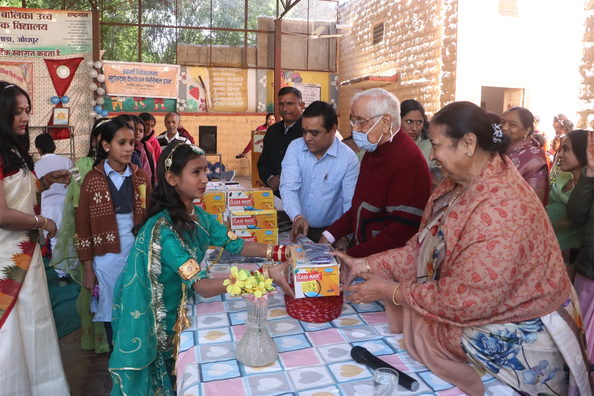

सेवा का प्रभाव
करुणा की सेवा-धारा, स्पष्ट आँकड़ों के साथ।
शिक्षा, संस्कार, छात्रवृत्ति और परिवार-सहायता से जुड़े कार्यों का संचयी विवरण, जो गरिमा, मार्गदर्शन और दीर्घकालीन संबंधों पर आधारित है।

सेवा की समन्वित धारा
चार प्रमुख आयाम, एक ही निष्काम सेवा-भाव से जुड़े हुए
प्रत्येक आँकड़ा अपने सेवा-कार्य से जुड़ा हुआ है। इससे शिक्षा-सहयोग, उच्च शिक्षा, बालक शिक्षा और परिवार-सहायता की अलग-अलग भूमिका स्पष्ट रहती है, और मिशन का सामूहिक प्रभाव एक स्थान पर समझ आता है।
विस्तृत आँकड़े
देखें, सेवा के प्रत्येक आयाम का विस्तार समय के साथ कैसे बढ़ा
नीचे दिए गए चार्ट प्रत्येक रिपोर्टिंग अवधि के अंत तक के संचयी आँकड़े दिखाते हैं। ये केवल उस अवधि की गतिविधि नहीं, बल्कि अब तक के कुल रिकॉर्ड हैं।
आँकड़ों से आगे
आँकड़े विस्तार बताते हैं, जीवन-यात्राएँ परिवर्तन दिखाती हैं।
पूर्व छात्राओं, साधकों और लाभार्थियों की यात्राएँ देखें, जिनमें शिक्षा, गरिमा और सतत मार्गदर्शन के वास्तविक परिणाम दिखाई देते हैं।
विश्वास और पारदर्शिता
सेवा का प्रभाव तब और अर्थपूर्ण होता है, जब उसकी नींव भी स्पष्ट दिखाई दे।
मिशन के सेवा-कार्य, शिक्षा-दर्शन और मार्गदर्शन सिद्धान्तों को समझकर इस प्रभाव की मूल भावना को और निकट से जाना जा सकता है।